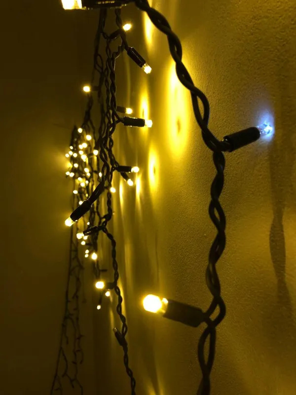

Гірлянда Profi-light "бахрома" Standard
від 1 400 грн
Вулична гірлянда на товстому каучуковому дроті 0,5 мм. 3 м гірлянди + запас дроту до розетки 1,7 м. Потужніть 15 Вт.
- Доставка Новою Поштою у відділення або кур'єром, відправка за 1–3 робочі дні; самовивіз у Дніпрі.
- Оплата при отриманні, на рахунок ФОП або готівкою при самовивозі.
- Повернення товару належної якості — 14 днів (крім виробів під ваш розмір).
Довжина і ціни
| Довжина | Ціна |
|---|---|
| 3 м | 1 400 грн |
| 6 м | 2 800 грн |
| 9 м | 4 200 грн |
| 12 м | 5 600 грн |
| 15 м | 7 000 грн |
| 18 м | 8 400 грн |
| 21 м | 9 800 грн |
| 24 м | 11 200 грн |
| 27 м | 12 600 грн |
| 30 м | 14 000 грн |
Опції до замовлення
Колір дроту
- Чорний без доплати
- Білий без доплати
Колір світіння
- Теплий білий без доплати
- Холодний білий без доплати
- Блакитний без доплати
- RGB(кольорова) без доплати
Мерехтіння
- З мерехтінням без доплати
- Без мерехтіння без доплати